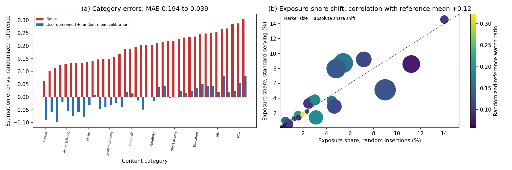

目录 · 10 节
1它到底在解决什么问题？2偏差主要在整体水平，不在排序3扣掉用户自己的水平，能修好多少？4剩下的差距从哪来？5换成“先学再用”，修正还管用吗？6修正之后，选出的品类更好吗？7已知答案的模拟：哪些情况修不好8我认为它的局限9一个推荐团队可以怎么用10结论做推荐和内容运营的人值得读，因为它量出了一张常用报表被推荐策略带偏了多少，以及常见的修正能修好哪一部分。很多团队用推荐日志里各品类的平均观看完成度决定扶持哪类内容，这篇论文量出了这张报表被推荐策略带偏了多少。作者用快手公开数据 KuaiRand，它会在推荐列表里随机换进一条视频，这些曝光不经过策略挑选，可以当参照。在同一批用户和视频上比较，正常日志里各品类的均值整体偏高很多，品类之间的排序却差得不多。先扣掉每个用户自己的平均水平，再对齐到随机曝光的总均值，各品类和参照的平均差距减少了 80%。可要是把两边的整体水平先拉平，只比每个品类高于或低于平均多少，差距只缩小了 21%，排序也没有可靠变好。
它到底在解决什么问题？
很多内容平台都有一张按品类汇总的报表：每个品类的视频平均被看完了多少，用来决定扶持哪类内容、给哪类内容多一些流量。这些数字直接从推荐日志里算出来，可推荐策略本身决定了谁看到什么视频、看几次、在什么场合看。报表上的数字变了，未必是品类本身变了，也可能只是策略把它推给了更爱看完的人。
下面用一个示意例子说明。
| 品类 | 正常日志里的平均完成度 | 随机曝光里的平均完成度 |
|---|---|---|
| 宠物 | 0.45 | 0.18 |
| 美食 | 0.40 | 0.16 |
| 健身 | 0.25 | 0.12 |
（示意）三类在正常日志里都高出一大截，因为策略倾向把视频推给会看完的人。可品类之间谁高谁低，两边差不多。整体偏高和排序错了是两种不同的偏差，修正方法修好其中一种，不代表修好了另一种。
论文用的参照来自快手公开数据集 KuaiRand。平台在部分推荐请求里，把列表中的一条视频随机换成一个候选池里均匀抽出的视频，这条“随机插入”的曝光不是策略挑的，可以当作参照。作者把两份日志限制在同一批 12,472 个用户、同一批 5,486 个视频上，并且只留下在正常日志里看过至少 5 个品类的用户。用户和视频都是同一批，两边就更好比。但两份日志仍可能在场合、列表位置、时间和用户状态上不同，作者没有把它们当成一一配对的实验。
偏差主要在整体水平，不在排序
作者把误差拆成两个量。一个是绝对误差：每个品类的报表值和参照值差多少，再对 38 个品类取平均。另一个是去掉整体水平后的形状误差。两边都用随机曝光里各品类的占比当权重，算出各自的加权总平均，再从每个品类里减掉它，只比每个品类高于或低于平均多少。最后同样对 38 个品类的差距取绝对值再平均。
正常日志的总平均完成度是 0.336，随机曝光只有 0.133。所以绝对误差高达 0.1935，形状误差只有 0.0491。两边品类排序的秩相关已经是 0.7833，参照里的前 10 个品类有 7 个也在报表前 10 里。报表的问题主要是整体偏高，而不是品类排序整个乱了。

扣掉用户自己的水平，能修好多少？
一个常见的修正是扣掉每个用户自己的平均水平。有的用户什么都看完，有的用户什么都划走，这个差异和品类无关。具体分三步。第一步，在正常日志里算每个用户所有观看的平均完成度，以及他在某个品类上比自己的平均高多少。第二步，对看过这个品类的用户取这个差值的平均，每个用户权重相同，不管他看了几条。第三步，加上随机曝光的总平均，当作整体水平的锚点。这一步只是给一个水平，不保证结果的平均正好等于参照。
这样绝对误差从 0.1935 降到 0.0387，少了 80%。可形状误差只从 0.0491 降到 0.0387，少了 21%。这 21% 的改善在统计上是可靠的。秩相关从 0.7833 到 0.7888，修正前后的差值是 0.0055，它的置信区间从 -0.0217 到 0.0412，包含 0，所以不能算变好。80% 这个降幅大，主要来自第三步直接借用了随机曝光的总平均。这一步要用到参照数据，所以作者只把它当诊断工具，不当成能直接上线的修正。另一种变体按曝光条数加权：用户在这个品类看得越多，他的差值占的分量越大。它的结果和等权版本接近，绝对误差和形状误差都是 0.0368。
为什么扣掉用户水平修不好形状？作者把每个用户在每个品类上的平均完成度写成三部分：用户自己的水平，品类本身的水平，以及这个用户对这个品类的特别偏好。扣掉用户平均后，第一部分刚好抵消。但用户的平均是在他自己看过的那些品类上算的，策略给不同人推的品类组合不同，这个组合的影响会留下来。用户对某个品类的特别偏好也会留下来。一个示意：宠物本身就是完成度高的品类。被推了很多宠物视频的用户，自己的平均也被宠物拉高；扣掉这个平均时，宠物的高出部分被抵掉了一块，看起来就没那么突出。
剩下的差距从哪来？
就算视频是同一批，两份日志里每个视频的曝光比例也不同。作者用一个经典的人口学分解，把每个品类的差距拆成两项。第一项是视频内差异：每个视频在两份日志里的完成度之差，按它在两份日志里曝光占比的平均来加权，再加起来。第二项是视频组合：每个视频在两份日志里的曝光占比之差，乘上它在两份日志里完成度的平均，再加起来。两项相加正好等于这个品类的差距。
举个示意例子：一个品类只有 A、B 两个视频。A 在正常日志里完成度 0.5、随机曝光里 0.3；B 两边都是 0.2。A 的曝光占比在正常日志里是 80%，随机曝光里是 50%。视频内差异是 0.2 乘 65%，等于 0.13；视频组合这边，A 多拿的 30% 乘 0.4 是 0.12，B 少拿的 30% 乘 0.2 要减去 0.06，合计 0.06。两项相加 0.19，正好是这个品类在两边的均值差（0.44 减 0.25）。
两项可能一正一负，所以作者用一种对称的分摊规则（Shapley）分账。记品类差距为 D，视频内差异为 W，视频组合为 M，D = W + M。视频内差异分到 (|W| + |D| − |M|) ÷ 2，视频组合分到 (|M| + |D| − |W|) ÷ 2，两份加起来正好是 |D|。再对品类平均，得到下表的占比。形状差距的算法一样，只是先把两项各自去掉整体水平。
| 差距 | 视频内差异 | 视频组合 |
|---|---|---|
| 绝对差距（0.1935） | 72.8% | 27.2% |
| 形状差距（0.0491） | 48.6% | 51.4% |
（数字来自论文第 5.2 节）
绝对差距大部分来自视频内差异。可在形状差距里，视频组合占了一半。扣掉用户水平只处理用户，不会重新平衡视频；形状差距里有一半来自视频组合，这和它对形状帮助有限是一致的。上面只用了两边都出现过的视频；只在随机曝光里出现的 1,788 个、只在正常日志里出现的 8 个，作者单独记账。这些都是记账式的拆分，作者明确说它们不是因果效应。
换成“先学再用”，修正还管用吗？
上面的修正都用到了评测时段的数据。更接近实际的做法是：用过去的数据学好修正，冻结住，再拿到下一个时段去用。作者用 4 月 8 日到 21 日的正常日志算每个用户的基线，用 4 月 22 日到 30 日的随机和正常曝光学修正，5 月 1 日到 8 日的结果在评测前不打开。测试时段的随机曝光只用来打分，不参与修正。 Hoot 说

- 一个品类（示意）：4 月 22–30 日，随机曝光均值 0.40，正常日志 0.55，学到差值 −0.15。
- 5 月 1–8 日正常日志的原始值是 0.60，加上差值得 0.45。
- 同期随机曝光是 0.43，它只用来打分：误差 0.02。
差值只从过去的数据学。学好就冻结，测试期不再改。测试期的随机曝光不参与修正，只当参照来打分。按品类学，就是每个品类各走一遍这条线。 出处: 论文 §6.1 冻结测试的时间切分；单品类数字为示意
作者比较了两种冻结修正，都在 4 月 22 日到 30 日学好。一种只学一个数：这段时间里随机曝光和正常日志的总平均差多少。另一种给每个品类各学一个差值：这个品类在两份日志里的均值差多少。测试时，把学到的差值加到 5 月 1 日到 8 日正常日志算出的原始报表上。结果是，只平移一个数的版本绝对误差从原始的 0.1853 降到 0.0531，形状误差 0.0515，和不修正时一样，因为整体平移本来就不改形状。按品类学差值的版本绝对误差 0.0251，形状误差 0.0261，秩相关 0.8545，前 10 重合 9 个。两者的绝对误差差 0.0280，区间不含 0。在这一周的测试里，按品类学的修正确实搬得过去。两段的品类偏差向量相关 0.8678，和这个结果一致。不过测试只覆盖两边都回来的 82.8% 的冻结用户，也只有一周。

修正之后，选出的品类更好吗？
报表最终是用来挑前几名品类的。作者用遗憾值衡量挑错的代价：参照里真正前 k 名的平均完成度，减去报表挑出的前 k 名在参照里的平均完成度。挑得越准，遗憾越接近 0。
挑前 10 名时，原始报表的遗憾是 0.0162，按曝光条数加权的扣用户水平版本是 0.0101，单看这一组差值，区间不含 0。可作者一共比了六组（两种修正乘三个 k），把六组放在一起校正后，区间变成从 -0.0136 到 0.0013，包含 0。挑前 5 名时，原始报表的遗憾 0.0093 反而比等权扣用户水平版本的 0.0146 还小；按曝光加权的版本和原始报表的差值区间也包含 0。挑前 20 名时差别也不显著。作者还把随机曝光拆成两半，一半用来定前 k 名，另一半用来打分，六组比较的区间全部包含 0。修正能把报表数值拉近参照，但在挑品类这件事上，还看不出可靠的收益。
已知答案的模拟：哪些情况修不好
真实日志里不知道真正的品类水平，作者就模拟了 100 个世界，每个世界有 38 个品类、760 个视频、1,000 个用户，答案已知。策略只按用户水平决定给每个人推哪些品类时，扣用户水平把形状误差从 0.0297 降到 0.0163。策略只在品类内挑视频时，它几乎没用，从 0.0218 到 0.0214，因为它根本不碰视频组合。知道真实曝光概率再加权也不一定好。曝光重叠很少时，这种加权的形状误差是 0.0522，比扣用户水平的 0.0207 还大。但这不说明扣用户水平更可靠：加权的问题在于数据太少、波动大，把每个用户的曝光从 60 次加到 300 次，它的误差就从 0.0540 降到 0.0256。
我认为它的局限
第一，只有一个平台、17 天的数据。看过至少 5 个品类的规则只留下 50.96% 的用户，结论不能直接套到接触品类较少的用户身上。
第二，结论依赖观看完成度这个指标。换成点击，扣用户水平后绝对误差从 0.2915 降到 0.0339，但秩相关从 0.4413 变成 0.3866，排序没有变好。
第三，KuaiRand 不公布随机插入的触发概率和列表位置，品类标签也是模型预测的。作者只能说随机曝光是这批视频的参照，不能说它代表品类本身的真实水平。
一个推荐团队可以怎么用
- 如果线上有随机探索流量，先用它算一份品类参照，把报表误差拆成整体水平和形状两部分分别看。只看绝对误差，会高估修正的效果。
- 修正要按“先学再用”评估：用前一段的探索流量学每个品类的差值，冻结后放到下一段，再拿下一段的随机流量打分。
- 用报表挑品类前，先算挑前 k 名的遗憾值，并对多个 k、多种修正一起做校正。只在一个 k 上显著的收益，不足以改变决策。
结论
整体偏高很容易修，只靠正常日志扣用户水平却修不好品类之间的相对高低，修正后也还看不出能挑出更好的品类。这篇论文的价值在一套审计流程：同一批用户和视频上对齐两份日志，分开看整体水平、形状和挑品类的代价，再用冻结修正和已知答案的模拟检查修正什么时候失效。
| 维度 | 评价 |
|---|---|
| 问题重要性 | 中高。品类报表常用来分配流量，偏差会直接影响扶持决策 |
| 方法创新性 | 中。用的是经典分解和 bootstrap，价值在把各种偏差分开量清楚 |
| 实验证据 | 高。配对 bootstrap、冻结的后续测试、六组联合校正和模拟都有 |
| 工程成本 | 低到中。需要有随机探索流量，计算本身很轻 |
| 是否值得尝试 | 值得。有探索流量的团队可以直接照这个流程审一遍自己的报表 |
读完这篇，你觉得
夜读鸮记下了，谢谢你的反馈。
点一下即可，无需登录；再点一次撤回。只统计匿名次数，不记录你是谁。
讨论
欢迎补充实验细节、复现经验或不同看法。需 GitHub 登录。
正在加载讨论…